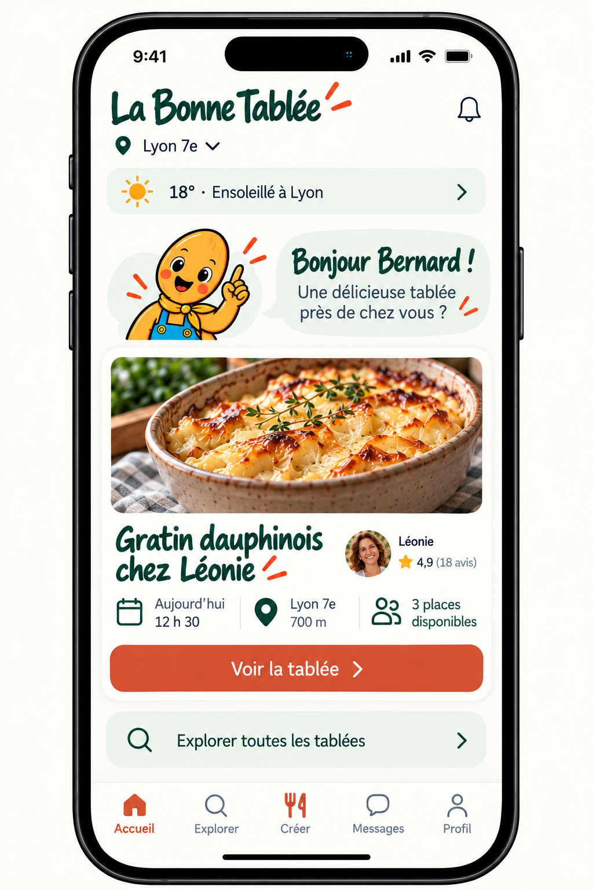
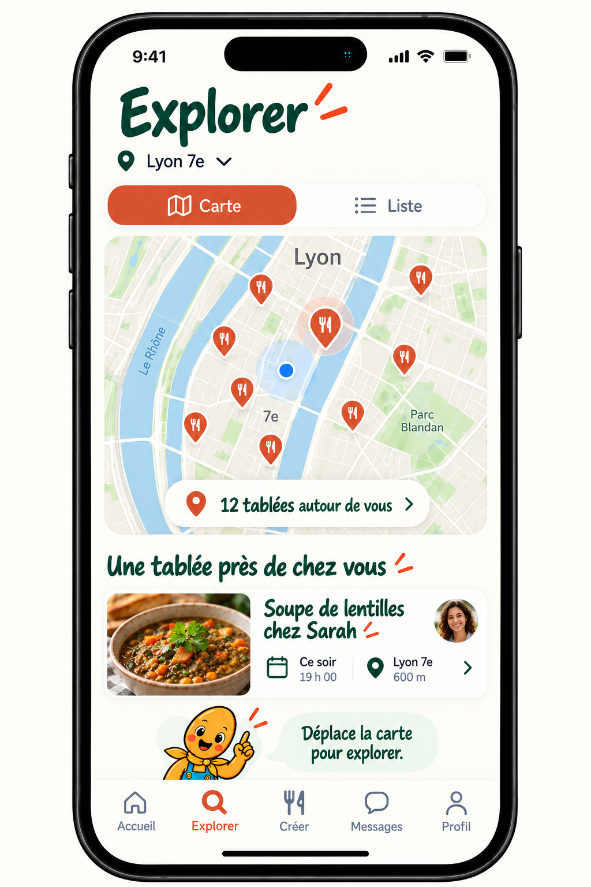
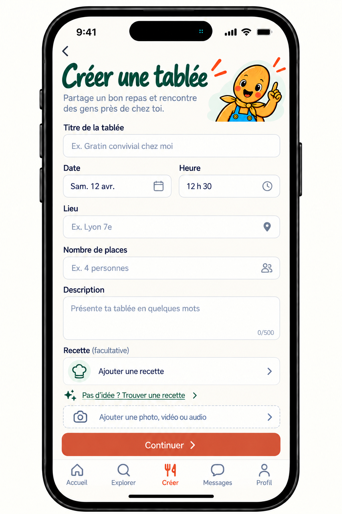
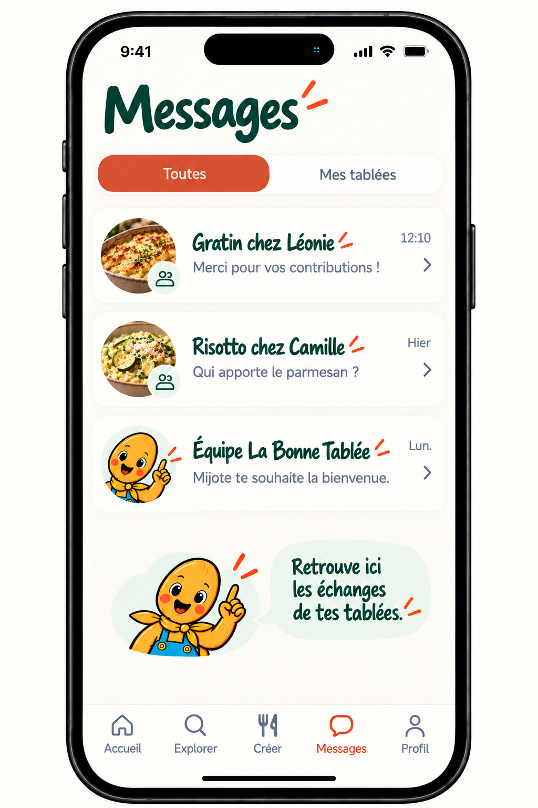
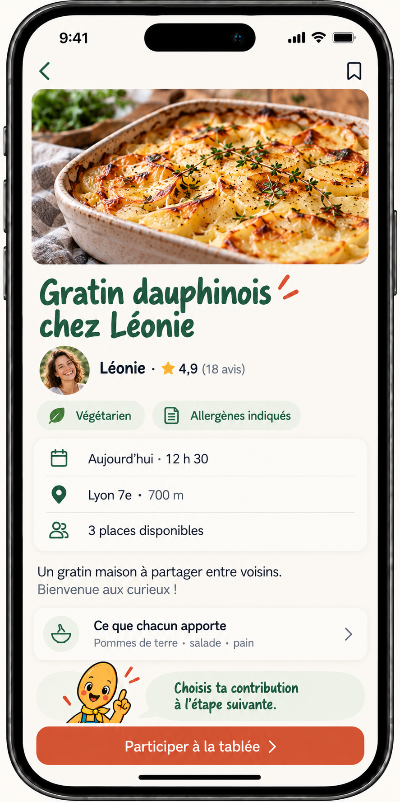
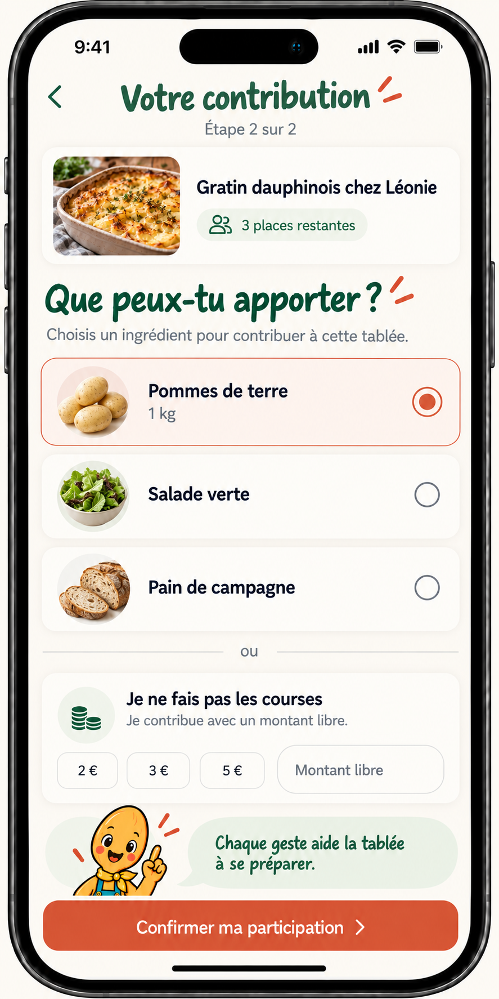
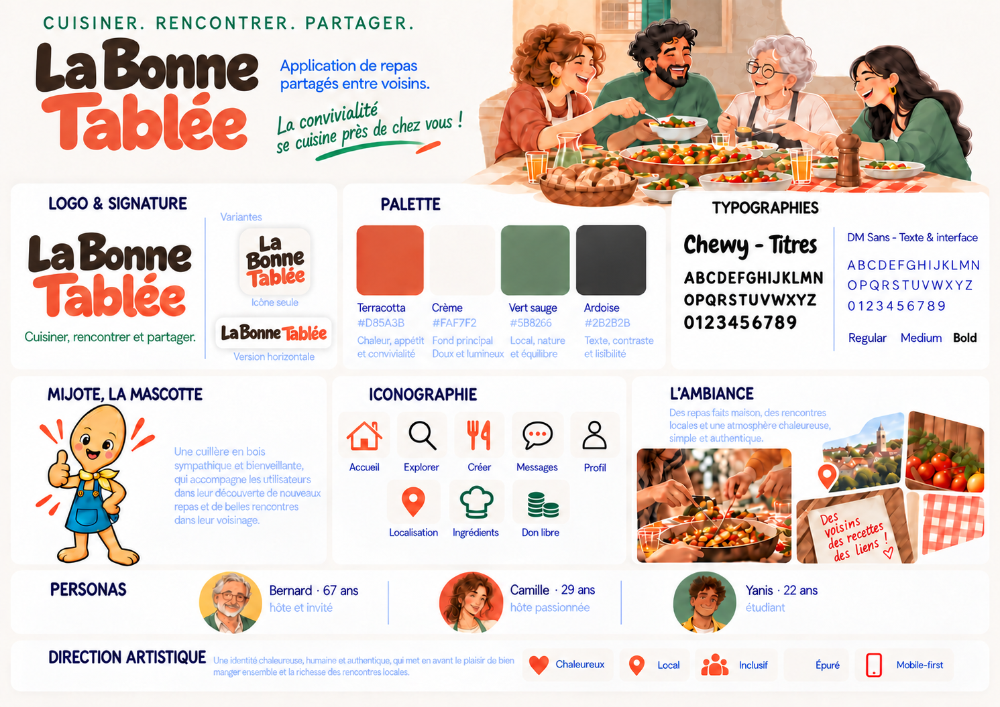

Version icône
Mijote en format compact.
Cette version accompagne les petits espaces : favicon, repère de navigation et éléments d’interface.
Une interface mobile volontairement épurée : une action principale par écran, des informations utiles et Mijote comme repère rassurant.
Cliquer sur une maquette pour l’afficher en grand.






Le vert profond et le terracotta évoquent la convivialité, en cohérence avec le caractère chaleureux de Mijote.
Cette version accompagne les petits espaces : favicon, repère de navigation et éléments d’interface.
